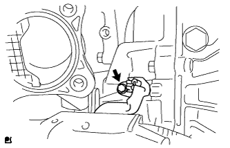

Transmission Revolution Sensor Installation |
| 1. Install Transmission Revolution Sensor (Sensor NT) |
 |
Apply CVT Fluid TC to a new O-ring and install it to the transmission revolution sensor (NT).
Install the transmission revolution sensor (NT) to the continuously variable transaxle assembly with the bolt.
Connect the transmission revolution sensor connector (NT).
| 2. Install Transmission Revolution Sensor (Sensor NIN) |
 |
Apply CVT Fluid TC to a new O-ring and install it to the transmission revolution sensor (NIN).
Install the transmission revolution sensor (NIN) to the continuously variable transaxle assembly with the bolt.
Connect the transmission revolution sensor connector (NIN).
| 3. Install Transmission Revolution Sensor (Sensor NOUT) |
 |
Apply CVT Fluid TC to a new O-ring and install it to the transmission revolution sensor (NOUT).
Install the transmission revolution sensor (NOUT) to the continuously variable transaxle assembly with the bolt.
| 4. Install Throttle Body Assembly |
 |
Install a new gasket to the intake manifold.
 |
Install the throttle body assembly with the 4 bolts.
 |
Connect the throttle body connector.
| 5. Install Air Cleaner Case |
 |
Install the air cleaner case with the 3 bolts and clamp.
Install the air cleaner filter element.
| 6. Install Air Cleaner Cap w/ Air Cleaner Hose |
Install the hinge portion first, then install the air cleaner cap with the 3 clamps.
 |
Install air cleaner hose No.1 to the throttle body assembly and release the lock of air cleaner hose clamp No.1.
 |
Connect the clamp and intake air flow meter connector.
 |
Connect the fuel vapor feed hose and fuel vapor feed hose No.2 to vacuum switching valve assembly No.1.
Connect the clamp and vacuum switching valve connector.
Connect the ventilation hose.
| 7. Install Battery |
Install the battery to the vehicle.
Install the insulator.
 |
Install the battery clamp with the bolt and nut.
Connect the battery positive terminal with the nut. (*1)
| 8. Connect Battery Negative Terminal |
| 9. Install Radiator Upper Air Deflector |
Install the radiator upper air deflector with the 8 clips.
| 10. TaSCAN-ECU Data Monitor |
)| 11. Setting Procedure When Disconnecting/Reconnecting Battery Terminal |
)